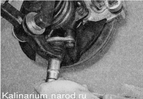
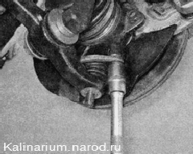
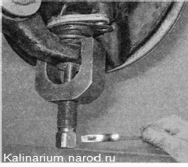
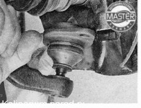

Шаровая опора стойки - снятие и установкаДля выполнения работы потребуются: съемник для выпрессовки пальцев шаровых опор; — подставка под автомобиль. Снятие 1. Подготавливаем автомобиль к выполнению работы. 2. Снимаем переднее колесо автомобиля. 3. Торцовым ключом на 19 мм отворачиваем гайку пальца шаровой опоры 
4. Торцовым ключом на 17 мм отворачиваем два болта крепления шаровой опоры к поворотному кулаку. 5. Устанавливаем на конец рычага съемник. 6. Заворачивая болт съемника, выпрессовываем палец шаровой опоры из отверстия рычага и снимаем шаровую опору. Установка Если предстоит установка шаровой опоры, бывшей в эксплуатации, предварительно снимите с нее защитный чехол и заложите смазку (ШРБ-4, Литол-24 или аналогичную) в шарнир шаровой опоры и на внутреннюю поверхность защитного чехла опоры. Устанавливаем шаровую опору в последовательности, обратной снятию.  |